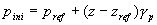

The global pore
pressure attributes dialog is displayed by right-clicking on the Global
pore
pressure
branch in the model tree and selecting Attributes.
The global pore
pressure attributes are used to define the global pore pressure situation for the initial
depletion stage. This global pressure definition is used to calculate the initial
pressure situation. The global pressures can be overwritten by specifying the
pore pressure in a formation (e.g. by assigning a distributed pressure
definition).
The following items
must be assigned to calculate the initial pressure situation:
|
Reference
pressure |
Field for the
reference pressure (=pref see formula below) |
|
Reference depth |
Field for
Depth at which the Reference pressure is present
(=zref
see formula below) |
|
Gradient |
Field for
(water/brine) gravity gradient of the pore pressure
(=gp see formula
below) |
The global pore
pressure can be defined with a distributed quantity ‘pressure’.
There are two options to define the value outside this distributed value:
Outside
set of distributed values use:
|
Predefined
pressure value |
The pressure
outside the pointset of the distributed value equals the global pore
pressure value obtained with the formula below. |
|
Extrapolated
pressure value |
The stress
outside the pointset of the distributed value equals the extrapolated
pressure value of the distributed value. |
The global
pore pressure is defined by the following formula:

With
| pini | initial pore pressure |
| z | z-coordinate |
| zref | z-coordinate of reference depth |
| gp | stress gradient of pore pressure |
| pref | reference pore pressure |